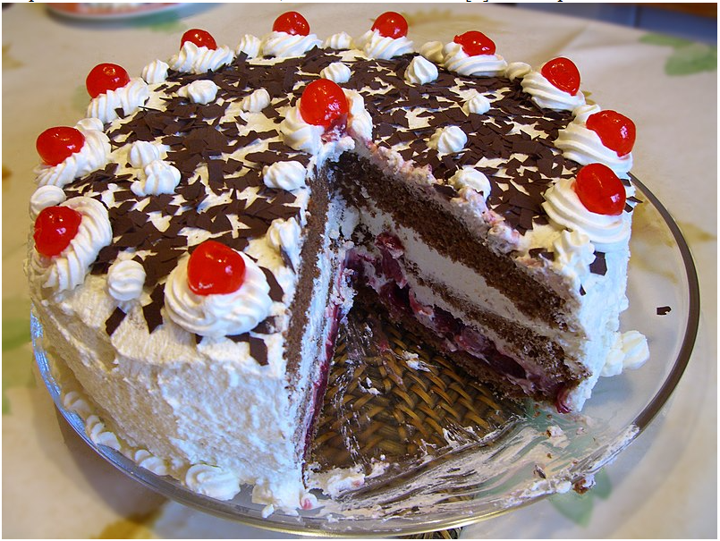

|
Black Forest gâteau or Black Forest cake (American English) is a chocolate sponge cake with a rich cherry filling based on the German dessert Schwarzwälder Kirschtorte (pronounced [ˈʃvaʁt͡svɛldɐ ˈkɪʁʃˌtɔʁtə] (listen)), literally "Black Forest Cherry-torte". Typically, Black Forest gateau consists of several layers of chocolate sponge cake sandwiched with whipped cream and cherries. It is decorated with additional whipped cream, maraschino cherries, and chocolate shavings. In some European traditions, sour cherries are used both between the layers and for decorating the top.[2] Traditionally, kirschwasser, a clear spirit made from sour cherries, is added to the cake.[3] Other spirits are sometimes used, such as rum, which is common in Austrian recipes. German law mandates that any dessert labeled Schwarzwälder Kirschtorte must have kirschwasser. The dessert is not directly named after the Black Forest mountain range in southwestern Germany. According to one school of thought, the name is derived from the specialty liquor of that region, known as Schwarzwälder Kirsch(wasser), which is distilled from tart cherries. This is the ingredient that gives the dessert its distinctive cherry pit flavor and alcoholic content flavor. |

|